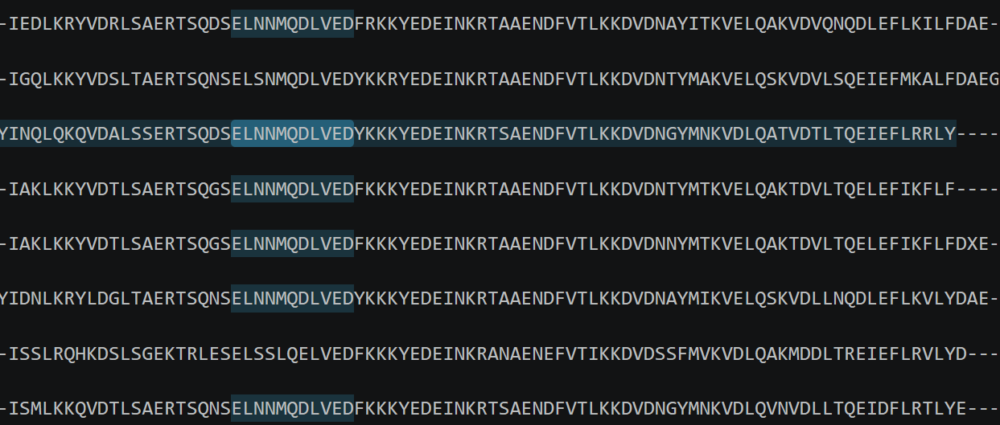
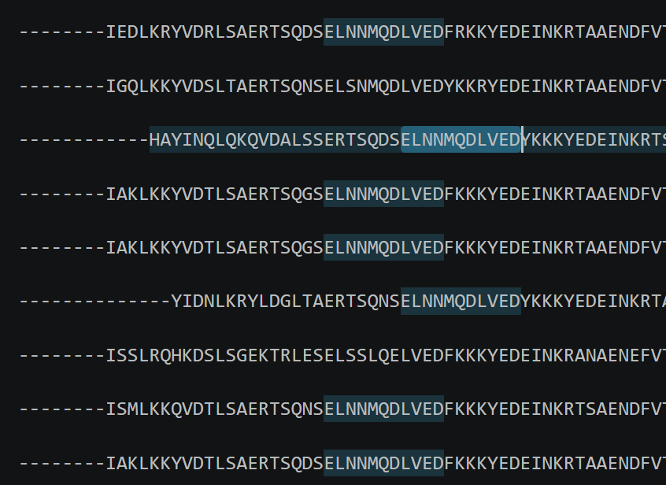
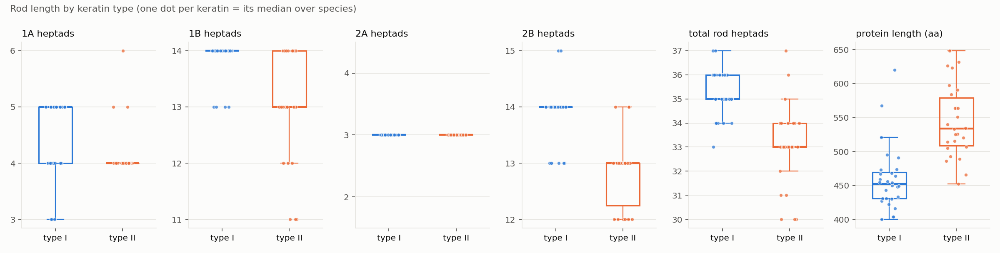
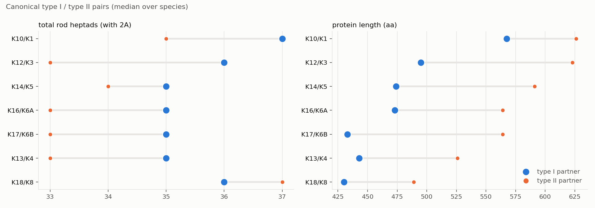
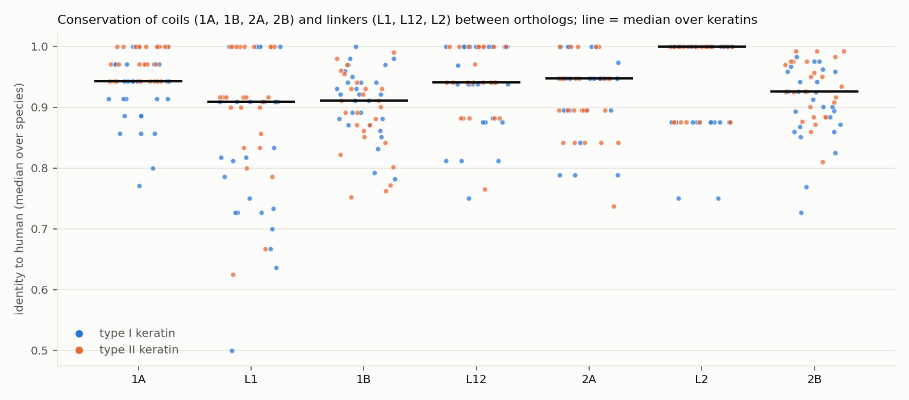
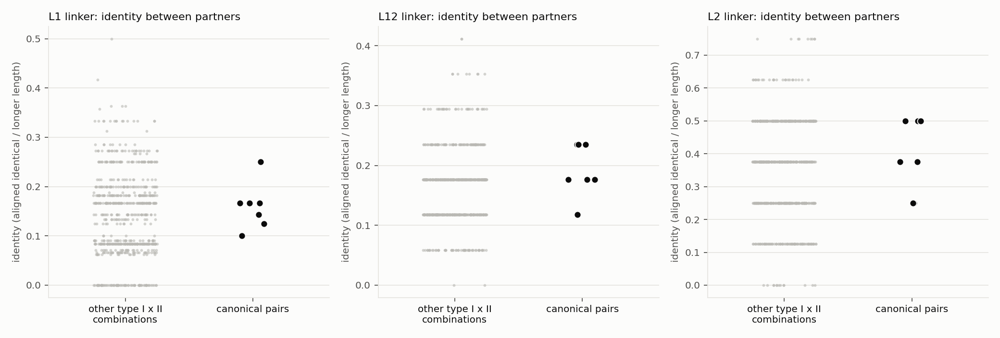
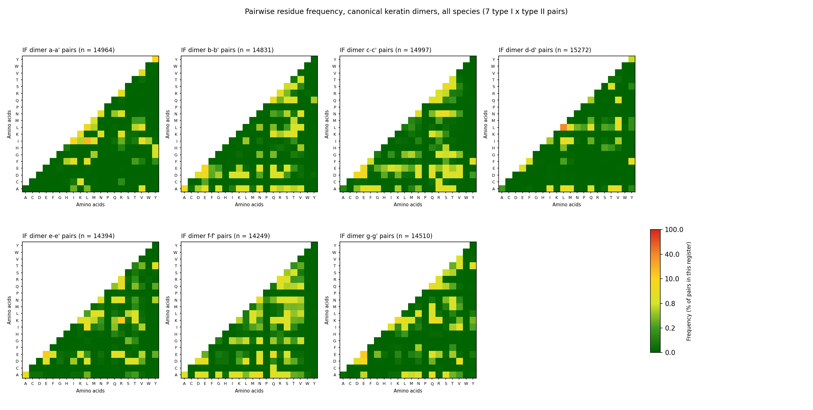

Keratin Phylogeny: Heptad Alignment of the Coiled-Coils
Tanishq Milani — semester work · register-aware alignment of keratin coiled-coil domains · ← summer work
§00 In Brief
Keratin coiled-coils aligned by heptad register (a–g) across mammals, as a basis for better phylogenies. Everything below uses CoCoNat's register calls, plus 2A, which CoCoNat misses.
4494sequences
64keratins
~121mammals
54keratins with 2A added
2A added. CoCoNat never calls coil 2A (19 aa). It is carried over from ortholog alignments and its register is inferred; the same frame fits all 54 keratins
KRT18 fixed. CoCoNat merged 1A + L1 + 1B in 92 of 103 KRT18 sequences; L1 was cut out and all alignments re-run
Type I rods are longer than type II by about 2 heptads (35 vs 33), but type II proteins are longer overall (about 534 vs 452 aa). 2A is 3 heptads in every keratin
Linkers differ by type, not by partner. L12 is 61% identical within a type and 14% between types; canonical partners are no more similar than random type I × II pairs
Pair-frequency heatmaps for the 7 canonical dimers show the expected core: Leu–Leu at d–d' (40%) and Ile–Leu at a–a' (23%)
§01 Idea & Method
Why not a whole-sequence MSA: heads and tails are low-complexity and very variable in length, so they fill the alignment with gaps and give unrealistically long branches. Only the coiled-coil rod is used; heads and tails will be attached later
Why align by heptad: a residue's role depends on its position. a/d are the hydrophobic core, e/g are often charged and form salt bridges, b/c/f face the solvent. An ordinary MSA can line a core residue up with a surface one
Method: CoCoNat register per residue → coiled-coil segments → heptads (a skipped position becomes a gap) → heptad-level Needleman–Wunsch with BLOSUM62 summed over the 7 slots, centre-star merge, so slot a always faces slot a and a missing heptad is a 7-residue gap

KRT2 — heptad-level alignment: the conserved motif lines up in one column

KRT2 — simple stacking, for comparison
§02 Adding Coil 2A
CoCoNat's "coil 2" is really 2B, and it starts about 18 residues later than the annotated start. Coil 2A, the short first part of coil 2, is never called.
Carry-over: the human 2A (19 residues, from the human domain table) is mapped onto each keratin's FAMSA ortholog alignment; every other species' residues in those columns are its 2A. Nothing is re-predicted per species, and CoCoNat's own blocks are copied unchanged
Register is inferred: all 7 frames were scored by hydrophobics at a/d. All 54 keratins give the same frame, cdefgabcdefgabcdefg (3 heptads)
Check: PCOILS agrees with this register at 97–100% of the residues it calls confidently (chance 14%). This is a consistency check, not an independent one, because PCOILS also uses the hydrophobic pattern
Coverage: 4378 sequences, 4332 with a complete gapless 2A, median identity to human 0.95. FAMSA and MAFFT agree on 100% (median) of 2A residues
KRT13's row in the domain table was incomplete; its boundaries were inferred by aligning it with 10 human type I keratins (all agree)
Not checked against a structure. Published vimentin structures describe the first half of coil 2 as a hendecad (11-residue) bundle rather than a classic heptad coiled coil, so the 2A register is a working assumption.
§03 KRT18: Cutting L1 Out
CoCoNat called 1A + L1 + 1B as one coil in 92 of 103 KRT18 sequences, which would put linker residues into the heptad grid
In a copy of the files, the L1 residues were set to non-coil: the run with coil probability < 0.9 around the lowest-probability residue (89 sequences; human residues 116–127). In 3 sequences with no residue below 0.9, the human L1 carried over by alignment was cut instead
KRT18 was re-aligned, and the keratin-wise, type I/II and species-wise alignments were re-run with it (*_L1fix folders). The originals are untouched
§04 Type I vs Type II Rod Lengths
Heptads per block with 2A included; one point per keratin (median over species); 201 outlier sequences left out.

Figure — 1A, 1B, 2A, 2B, total rod heptads and protein length by keratin type
Type I has more rod heptads: 35 vs 33 (p = 1e-6). Medians: 1A 5 vs 4, 1B 14 vs 13, 2B 14 vs 13
The rod is conserved by design: 2A is 3 heptads in every keratin of both types
Type II proteins are longer overall (about 534 vs 452 aa), so the extra length is in the heads and tails
Canonical partners differ by 1–3 heptads; KRT18/KRT8 is the only pair where type II is longer

Figure — the seven canonical type I / type II pairs
§05 Linkers L1, L12, L2
Linkers are cut from the alignments by the human boundaries (2A excluded). Partner pairs: KRT10/1, 12/3, 14/5, 16/6A, 17/6B, 13/4, 18/8.

Figure — identity to human across mammals, per block; line = median over keratins
Within a keratin the linkers are as conserved as the coils across mammals (L1 0.91, L12 0.94, L2 1.00 identity to human)
Across keratins they separate by type: L12 is 61% identical within a type and 14% between types; L1 36% vs 18%; L2 68% vs 36%
L1 and L12 are richer in Pro/Gly in type I (0.20 and 0.19) than in type II (0.05 and 0.00)
Consensus L12: type I Q-.GG.VNVE.DAAPGV, type II HISDTSVVLSMDNNR.L; L2: NRRDAE.W vs SRAEAEAW

Figure — canonical partners (black) against all other type I × II combinations (grey)
Null result: partner linkers are no more similar than random type I × II pairs (permutation p = 0.25, 0.61, 0.51 for L1, L12, L2). Partner identity is 0.16, 0.19, 0.39 against 0.14, 0.16, 0.36 for all pairs.
§06 Pair-Frequency Heatmaps
Same kind of figure as Fig 3-3 of Neelesh Soni's thesis, for keratin dimers in all species instead of human only.
Chain I and chain II residues are paired at the same position (domain and offset in 1A, 1B, 2A, 2B) in the same species, for the 7 canonical dimers
A pair is counted in register r only when both residues carry the letter r (a–a', b–b', … g–g'); about 14,000–15,000 pairs per register
Colour is the percent of all pairs in that register (scale 0, 0.2, 0.8, 10, 40, 100)

Figure — pairwise residue frequency at a–a' to g–g'
d–d' is dominated by Leu–Leu (39.8%); a–a' by Ile–Leu (22.5%)
e–e' shows Lys–Arg (15.3%) and Glu–Glu (14.4%); g–g' Glu–Glu (14.2%)
Descriptive only. There is no comparison set (the thesis compares against a coiled-coil database), so most cells are simply green (rare).
§07 Limits & Next
Limits: CoCoNat's coil calls define everything except 2A; the 2A register is inferred; 2A boundaries in other species come from homology to human; the types of a few keratins (KRT42, KRT222 as type I; KRT2c, KRT87–90 as type II) are inferred
Next: trees (keratin-wise, species-wise, type I vs II) from the alignments with IQ-TREE; attach heads and tails; test which rod block carries the signal that distinguishes canonical partners from non-partners across the 121 mammals